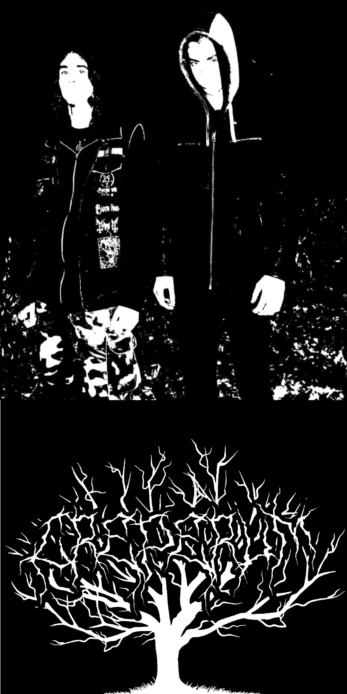

Biography
CREPERUM, from the Romanian city Craiova, was formed by Beresad(guitars, bass, drums) in 2017. After Astaroth(vocals) joined the band in 2018, they released their first EP, "Eternal Winter", on December 1st.
CREPERUM is working on a new album, "Extremum Eius Spiritum", and a couple of singles.